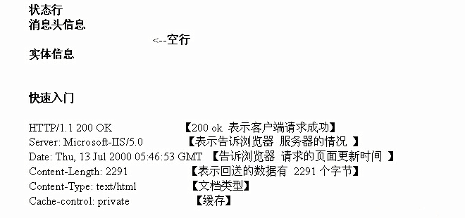
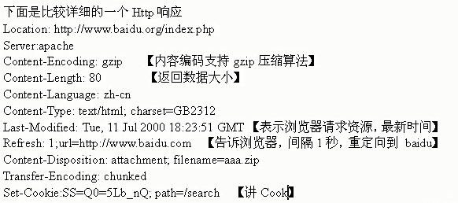
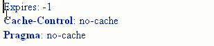
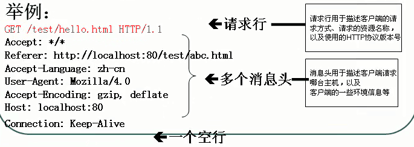
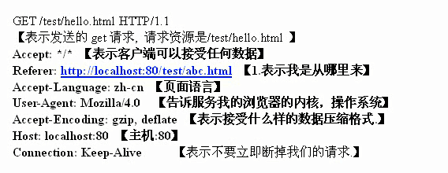

1、php文件中可以包括PHP、HTML、JavaScript、CSS、Flash、图片、视屏等等
2、php文件一定是放在服务器中的，但php文件中不同的内容在不同的地方执行(服务器端，客户端)。
1、http协议是建立在tcp/ip协议基础上，web开发数据的传输都是依赖于http协议，http协议全称是超文本传输协议。
2、在服务器端我们可以通过预定义常量$_SERVER来获取我们需要的信息，重要的有①HTTP_HOST:获取主机名②REMOTE_ADDR:访问该页面的ip③DOCUMENT_ROOT:可以获取apache的主目录④REQUEST_URL:可以获取请求的资源名。
3、http请求主要有两种方式get和post
get和post的区别有：①安全性，get请求的数据会显示在地址栏上，post请求的数据会放在http协议的消息体内。②从可以提交的数据的大小来看：1）http本身对数据大小没有限制 2）浏览器对get和post请求作限制，get请求数据限制为2k+35，post没有限制。

1、状态码：用于表示服务器对请求的处理结果
2、302状态码使用，比如我们现在希望访问a.php页面，让其自动重定向到b.php页面。基本语法：header("Location:新的页面")，302状态码也可以让其跳转到外网去：header("Location:http://www.baidu.com")。
3、http完整响应

控制页面是否需要缓存

 
1、mysql扩展库操作mysql数据库的步骤①获取连接$conn = mysqli_connect("localhost","root","password")，②选择数据库mysql_select_db("数据库名")③设置操作编码(建议有)④发送指令$sql="select * from 表名";$res=mysql_query($sql,$conn);⑤接收返回结果，并处理$row=mysql_fetch_row($res);⑥释放资源，关闭连接msql_free_result($res);mysql_close($conn);
2、mysql_fetch_row()返回一个索引数组（推荐使用）mysql_fetch_assoc()返回一个关联数组mysql_fetch_array()返回索引数组和关联数组mysql_fetch_object()把一行数据当作一个对象返回。
①$_GET②$_POST③$_REQUEST④$_SERVER⑤$_ENV⑥$_FILE⑦$_COOKIE⑧$_SESSION⑨$GLOBALS
(1)、$_GET实际使用:客户机(浏览器)通过超链接传送数据给服务器！如传送数据
解决ie低版本中文奇数乱码的问题:方法一 : 给奇数中文加一个全角空格，然后到服务器接收时，在用trim函数去掉空格。方法二 : 使用urlencode(对中文url编码)和urldecode函数。如 ：$str = urlencode("北京好") 传送数据
$_GET也可以接收表单以get方式提交的的数据，但建议使用POST方式提交表单数据,header("Location:a.php?name=xiaoming")也是以get方式传送的
判断是否收到值: 建议使用empty()函数判断，isset()函数也可以但低版本不支持。
(2)、$_POST : 通过http post方法提交的数据，会被封装到$_POST超全局数组中。
基本用法 : 客户机(浏览器)通过表单传送信息给服务器并且需要使用post方式，文件上传必须使用post方式。
(3)、$_REQUEST可以接收POST、GET、COOKIE数据，$_REQUEST不安去，可以通过$_SERVER里的REQUEST_METHOD属性来获得是通过post或get等方法传送数据的。
m->model模型处理业务逻辑 。v->view视图/界面，使用php编写 。c->controller控制器，控制器的主要作用是接收用户的请求，并调用某个service方法，完成任务，然后跳转到下一个页面。
MVC的核心思想是:强制程序员在编写项目的时候，把数据的输入、数据的输出、数据的处理分开。
什么是会话：打开浏览器，访问某个网站的很多页面（通过超链接），当你关闭浏览器时一个会话结束。
①当浏览器访问cookie.php页面时，我们的服务器会以特定的格式回送http响应，当浏览器获取到该信息后，就会保存该cookie的信息到本机的默认文件中。
②setcookie（）函数有三个参数，第一个参数为键，第二个参数为值，第三个参数为保存的时间，如果没有第三个参数，cookie就不会保存到客户端，当浏览器会话结束，cookie就失效。
③cookie规定保存字符串
④客户端可以保存多个键值对
⑤cookie也可以保存中文，默认将会对中文进行urlencode编码
⑥cookie可以给不同的键值设置不同的保存时间
设置cookie:setcookie("name","aaa",time()+秒数)。获取cookie:$_COOKIE,获取指定cookie:$_COOKIE['name'].
更新cookie就是重新设置cookie。删除cookie语法:①删除某一个setcookie（"key","",time()-秒数），全部删除用foreach循环进行操作foreach（$_COOKE as $key=>$val）{setcookie("$key","",time()-秒数)}
session是服务器端技术，服务器在运行时可以为每一个用户的浏览器创建一个其独享的session文件。
session的基本语法(增删改查)，如何保持session①初始化session:session_start();②保持数据$_SESSION['name'] = "xiaoming";③保持的数据格式: name|s : 8:"xiaoming"，name代表键，s代表数据类型，8代表数据大小。
session中可以保存double,integer,array,object,bool,string等类型
session注意事项:①要使用session，都需要初始化session。②session文件中可以放入多个键值对，键不可以重复。如果我们需要取出对象，则需要实现申明一下类的定义信息。
更新session就是重新设置$_SESSION['name'] = "小明";